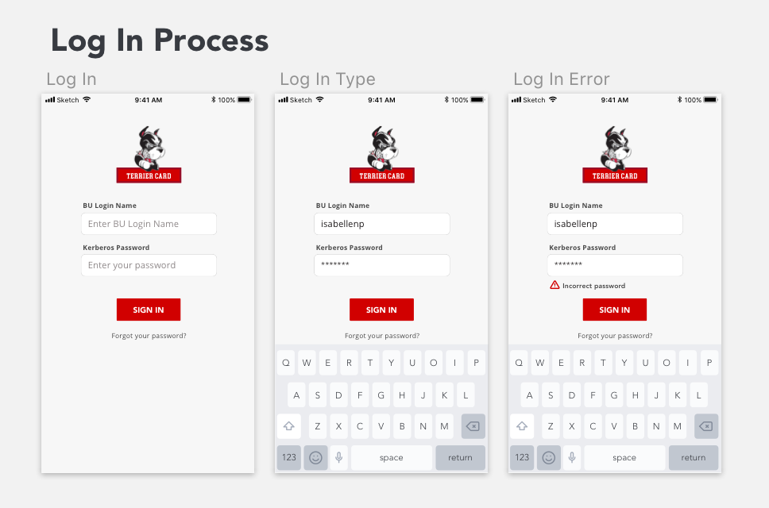
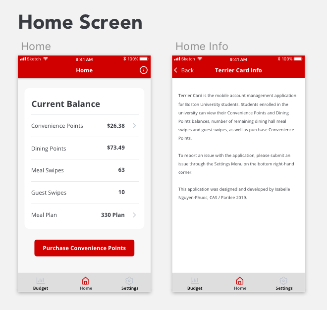
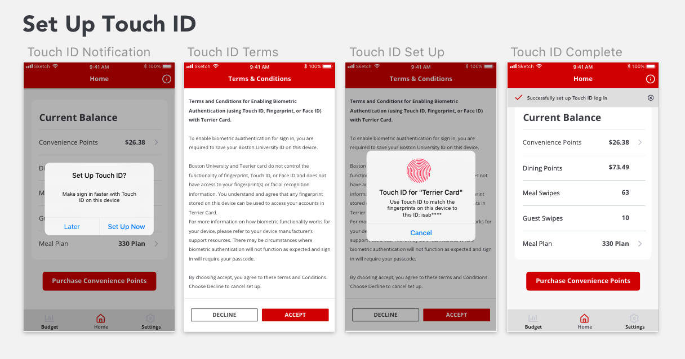
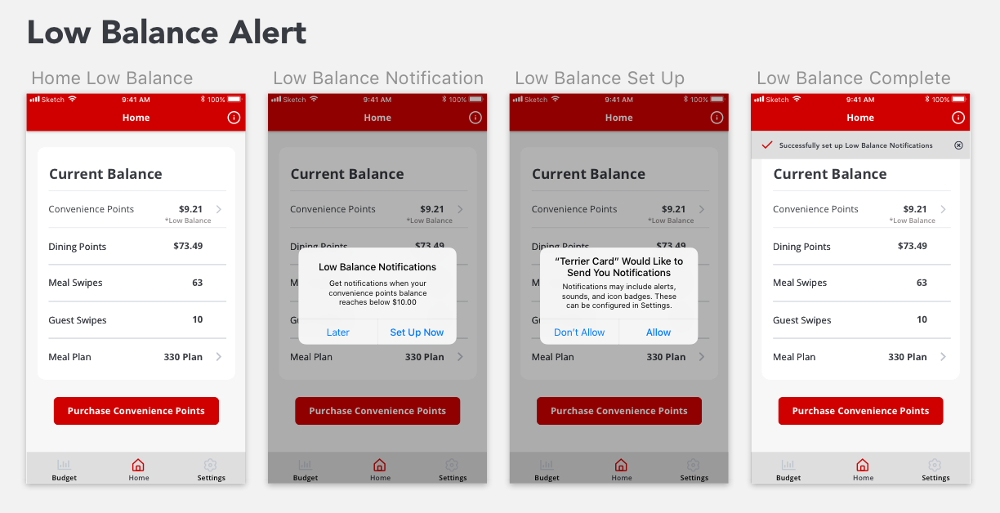
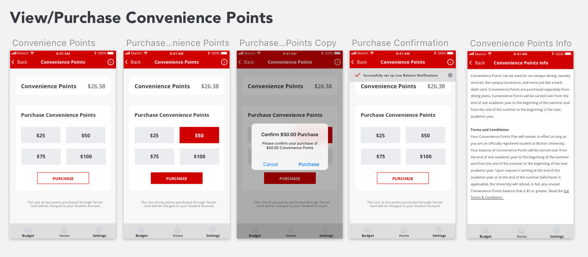
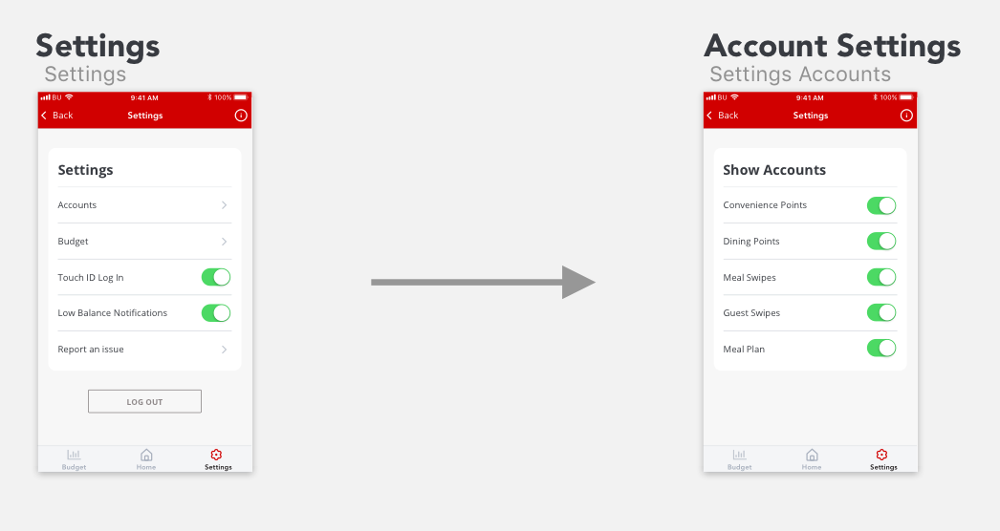
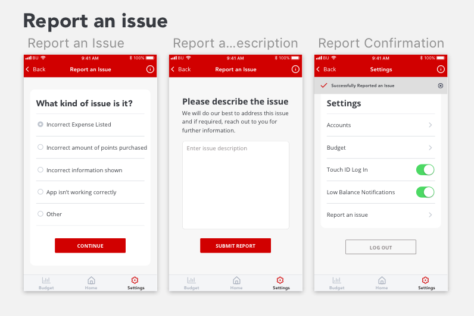
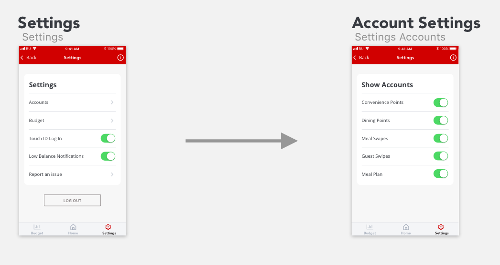
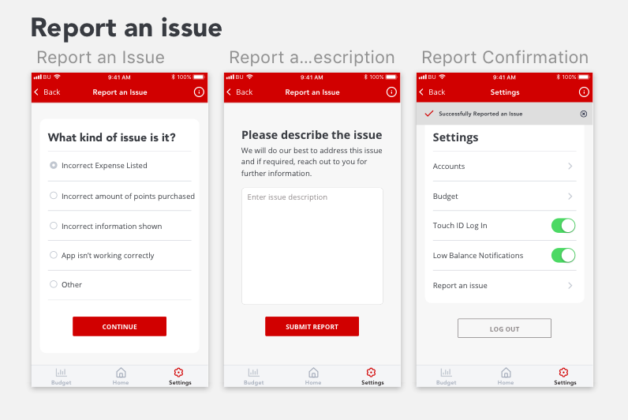

Project Overview
Terrier Card is a personal project addressing the pain points of Boston University's payment system. Currently, there is no central location to view your balance of various currencies within BU and to top up your balance. The process is spread across multiple links on BU's student link, and the site is not responsive. Through research, the majority of students purchase points on the go using their phones, often in line while paying for their items. This application draws influence from mobile banking applications to provide students an efficient, clear, and easy way to manage their finances.
     


